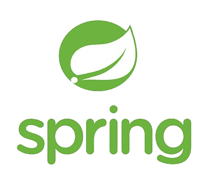
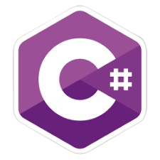

Quem sou eu?
Me chamo Bruno e sou um desenvolvedor em formação com foco no ambiente Microsoft e uma pitada de Java, apaixonado por tecnologia, e com sede de conhecimento, pronto para contribuir nesse enorme ecossistema do desenvolvimento de software. Comecei minha jornada no mundo da programação em 2023 e desde então não paro de aprender e me desafiar.
Formações:
Linguagens
Atualmente, estou imerso no universo da Análise e Desenvolvimento de Sistemas. Experiencia com, C#, .NET,
Entity Framework, Java, Spring Boot, Banco de Dados relacionais como o PostegreSQL e MySQL, e não
relacionais como MongoDB

